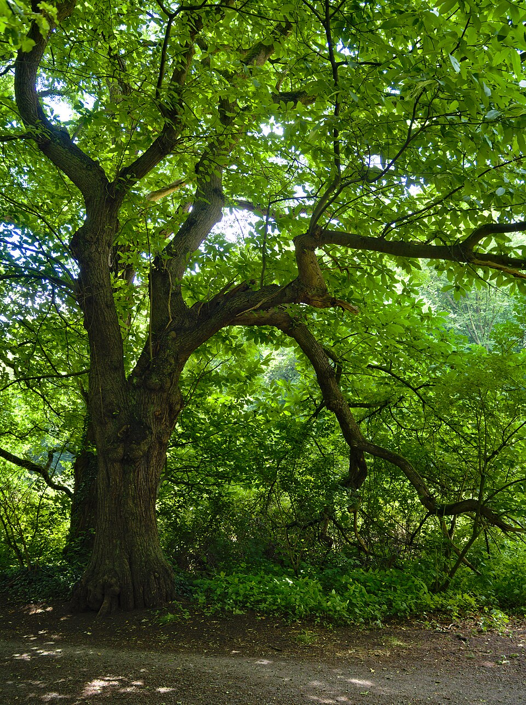

Castanea — Sweet Chestnut (Castanea)
A spiky, millennia-old veteran who hurls armoured ammunition, wears tannin-soaked armour that outlasts oak, and has been feeding armies across Europe since the Roman legions planted it along their roads.
Combat flavor
Medium-dense wood gives balanced attack speed, while the spined burr is a ready-made special: a ranged thorn-volley or area-denial burst of spiky nuts. High tannin content could translate into a "bark armour" defensive passive that reduces incoming damage over time.
Real-world facts
Typical / max height20–35 m; trunk diameter often 2 m+
LifespanUp to 700+ years (notably ancient specimens known; considered long-lived)
Wood~480–540 kg/m³ air-dry (Greek study: 486–542 kg/m³ depending on height); moderately dense, ring-porous like oak but lighter and easier to work; high in tannins making it naturally rot-resistant
Growth speedMedium-fast (fast in youth, settling to medium at maturity)
Ecology / notable traitsBurr (cupule) studded with sharp spines — natural projectile imagery; nuts are a critical mast crop for wildlife and historically for human nutrition; bark and wood very high in tannins (used in tanning leather); coppices vigorously — cut stumps regrow as multi-stem stands; native to southern Europe and western Asia; introduced widely by Romans; Castanea blight fungus (Cryphonectria parasitica) has devastated American chestnut (C. dentata) but C. sativa shows greater resistance
World raritycommon
Gallery
